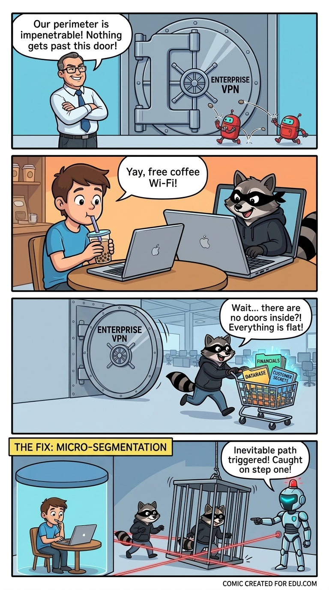

The Flat Network & VPN Trap
- Exposed Gateway: Public listening ports scanned by global botnets 24/7.
- Single Point of Failure: One gateway vulnerability breaches the entire perimeter.
- Flat Lateral Runway: A single infected laptop reaches all internal databases and servers.
- Daily User Friction: Dropped tunnels and repetitive logins drive users to shadow IT.
Multi-Zone Active Defense
- Cloaked Services: Zero inbound public ports; invisible to external scanners.
- No Central Concentrator: Direct peer-to-peer authenticated connections.
- Micro-Isolated Endpoints: Access strictly scoped to assigned apps; zero peer visibility.
- 必经之路 Tripwires: Mandatory lateral recon triggers 100% deterministic alerts.
- Invisible User Experience: Silent background mesh with zero reconnect clicks.
1. Service Level: Stop Letting the World Hit You
Opening a public port is like standing still in a crowd while anyone throws rocks at you. Automated scanners hit every open IP within minutes of going live.
CyberSniper cloaks services completely. Inbound ports do not listen to the public internet. If an attacker cannot reach the network socket, they cannot exploit unpatched software bugs.
2. Client Zone: Maximum Isolation, Zero Friction
Security fails when it annoys users. Traditional VPN clients drop connections and force repetitive logins, so users switch them off.
CyberSniper runs quietly in the background without user prompts. An authorized laptop reaches its specific work tool, but cannot route packets to neighboring laptops, office printers, or production databases. A compromised endpoint stays locked in a padded room.
3. 必经之路: The Inevitable Path Tripwire
You cannot predict an adversary's initial entry exploit. But once they land on a compromised machine, they arrive completely blind. To survive and plan their next steps, they have no choice but to run dual reconnaissance:
- Host Reconnaissance: Querying local privileges, harvesting cached credentials, cataloging installed security tools, and attempting to blind native sensors.
- Network Reconnaissance: Inspecting routing and ARP tables, scanning adjacent subnets, and probing for reachable servers or domain controllers to pivot into.
On a flat corporate network, this discovery chatter drowns in normal administrative noise. Under CyberSniper's micro-segmentation, no endpoint has any operational reason to sweep adjacent IP space or inspect defensive sensors. Because the adversary must recon to advance, their mandatory information gathering becomes an immediate, 100% deterministic tripwire that halts them cold.
4. The Deception Minefield: Flooding the Field
CyberSniper flips the odds by creating an overwhelming ratio of fake zones to real production. Real services remain cloaked, while the visible network is flooded with decoy environments and canary lures:
- Misleading Offensive AI: Automated bots and LLM agents greedily follow open decoy paths, burning their tokens and compute in endless tar-pits while generating instant alerts.
- Exhausting Human APTs: Disciplined adversaries chase believable canary credentials and mock assets, burning their manual tradecraft without ever touching real production.
The moment an intruder lands, our terrain dictates their moves. They cannot advance without exploring, and every step they take walks straight into an AI-synthesized minefield. We stop reacting to their playbooks. They are forced to play on our board.